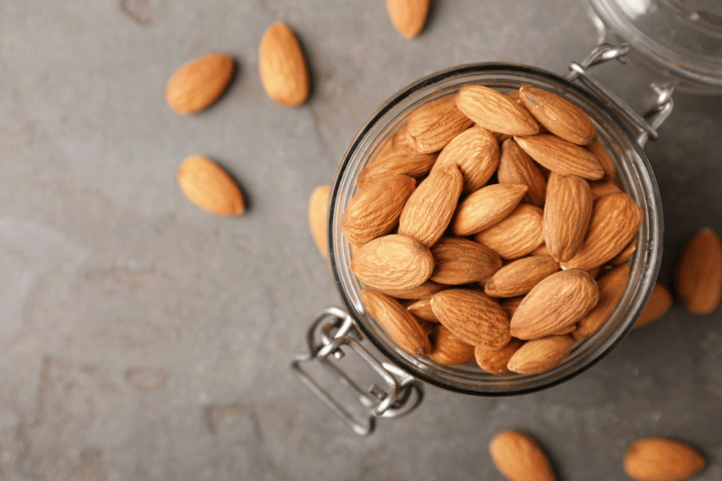

Almond Milk made in a Juicer
I can’t even recall the last time I bought a commercially produced almond milk. Store-bought almond milk is typically loaded with preservatives and thickeners, and there isn’t a need for any of that. Wouldn’t you prefer something more natural and full of nutrients rather than full of ingredients that we have no idea where they came from? I have shown you how to make nut milk in a blender and even in a fruit press, but today, I am going to show you how I make it in a juicer. Time to juice those almonds!
 Can I use any juicer to make nut milk?
Can I use any juicer to make nut milk?
The quick answer is NO, but I will explain why. You will need what is referred to as a slow juicer that uses an auger to squeeze out the juice (similar to how you would hand-squeeze the pulp in a nutbag). This natural motion minimizes damage to the ingredients, keeping their natural taste and nutrition intact.
Centrifugal juicers heat up and can oxidize the milk with their high-speed blades, reducing nutrients and breaking down the form and color.
Not too long ago, I got a new juicer since my old one of nine years retired. I bit the bullet, and with a promoted discount, I bought the Hurom. I have to say that this machine mesmerizes me. It’s so quiet and is just a beauty to watch.
If you already own another juicer brand and wish to make nut milk in it, please check the manual that comes with your machine. Not all are built for making milk, and it may void the warranty, so please double-check before proceeding.
What if I don’t have a juicer?
You don’t have to use a juicer to make nut milk; there is the ole faithful blender approach. You can click (here) if you want to or need to go this route. I also have a posting on how I have used a fruit press for making nut milk. You can read about it (here). But if you suffer from weak hand strength or need to produce large quantities, using a juicer is fun and easy. So many options. :)
Why Make Your Own?
- Saves money
- You can control the quality of ingredients
- Lactose-free
- Vegan and plant-based
- Paleo-friendly and gluten-free
- Low caloric value (one cup is only 60 calories)
- No cholesterol or saturated fat
- Loaded with vitamins (A, various B, D, and E)
- Rich in minerals such as phosphorus, potassium, and zinc
- The leftover pulp can be used in many raw recipes or dehydrated into a flour. Click (here) to learn more.

How much water and almonds do I use?
You’ll see in the ingredients listed below that I didn’t indicate measurements of water or almonds to use when making your milk. You have ultimate control over how thick or thin you want it. For the function of the Hurom juicer, you need to use at least a ratio of 1:1. You can always thin it out afterward by adding more water. You can create viscosity levels that take it from skim milk to a heavier cream, all depending on how much water you add.
Ingredients
Preparation
- In a glass bowl, soak almonds in twice the amount of water as the almonds (they swell some).
- Soak for 8-24 hours.
- Soaking is excellent not only for reducing phytic acid, but it also softens the nuts, making them easier to blend into a smooth, silky texture.
- If you already have soaked/dehydrated nuts in the freezer or fridge, I suggest soaking them again to soften them.
- After soaking, drain and rinse the almonds with fresh water. Add clean water back into the bowl with the almonds.
- Removing the skins is optional. I do it when I need white pulp for raw recipes.
- Turn on your slow juicer and use a ladle to spoon in almonds and water (equal parts) into the juicer.
- Keep going until you’ve put in all the almonds and water.
- Don’t go too fast, or your juicer will get stuck.
- Watch the nuts turn into milk and let it flow out.
- Pour yourself a glass and enjoy, or flavor to taste.
Storing and Expiration:
- Store the milk in an airtight glass container such as a mason jar.
- Always label with the contents and the date that it was made.
- If, for some reason, separation does occur, shake the jar before serving, and the milk will come back together.
- Fridge – The milk can last anywhere from three to five days in the refrigerator.
- If the nut milk prematurely sours, it may be from the unclean blender, nut milk bag, or poor quality nuts.
- Freezer – There are several ways to store nut milks in the freezer. Freeze for up to three months.
- Pour the milk into ice cube trays and freeze. The milk cubes are great for plopping into smoothies.
- Freeze in 1 1/2 pint freezer-safe jars.
- It is essential that you only freeze glass jars that are made for freezing. I have tested this, and sure enough, I have had jars crack on me, resulting in throwing everything in the trash — sad day.
- You can use smaller jars for better portion control if you don’t plan on using a full 1 1/2 pints worth.
- Pay attention to the “maximum freeze line” indicated on the jar. If you don’t see that, then it’s another indicator that it isn’t safe to place in the freezer.
Flavor options
- I recommend flavoring your milk after the pulp has been removed. That way, the pulp remains neutral in flavor for other recipes.
- Add honey, dates, coconut sugar, stevia, or any desired sweeter.
- Add vanilla, cinnamon, or your favorite spice.
- Add raw cacao to create a chocolate almond milk taste.
- Add 1 tsp of sunflower lecithin per cup of milk to help emulsify it and to add additional nutrients.
- Sunflower lecithin is made up of essential fatty acids and B vitamins. It helps to support the healthy function of the brain, nervous system, and cell membranes. It also lubricates joints; helps break up cholesterol in the body.
- It comes in two forms, powder and liquid. I prefer the powdered sunflower lecithin.
- Setting aside all the nutritional benefits, it is a natural emulsifier that binds the fats from nuts with water creating a creamy consistency.
© AmieSue.com